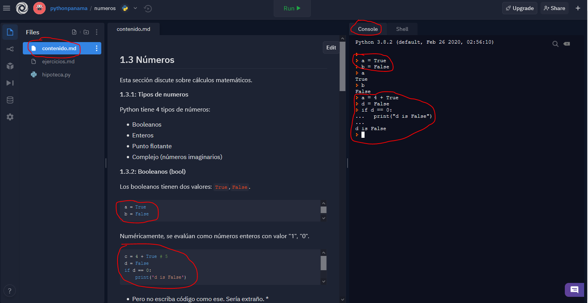
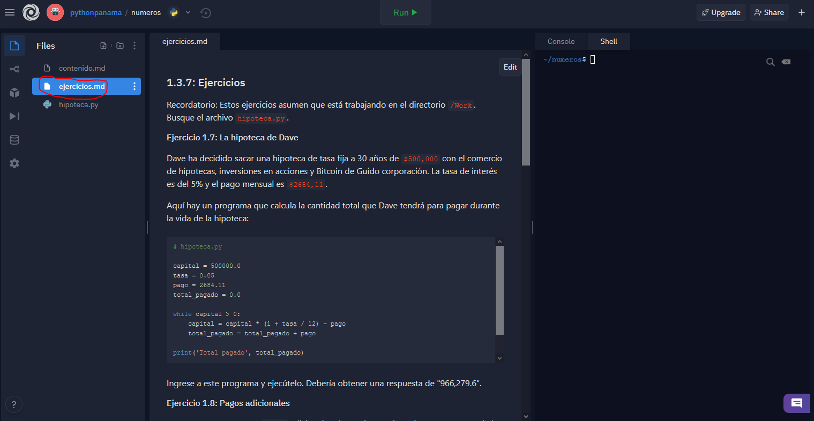
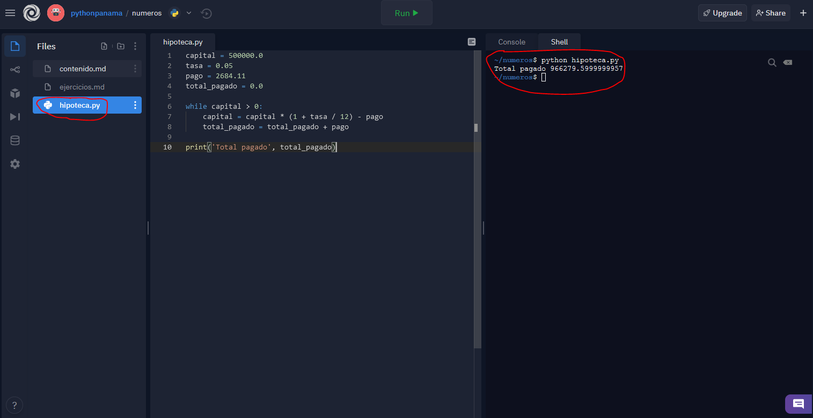
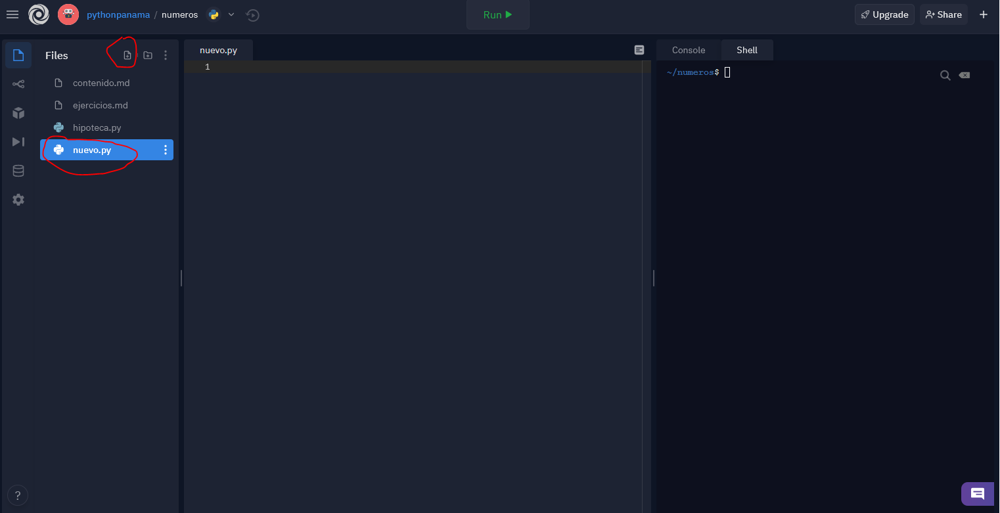
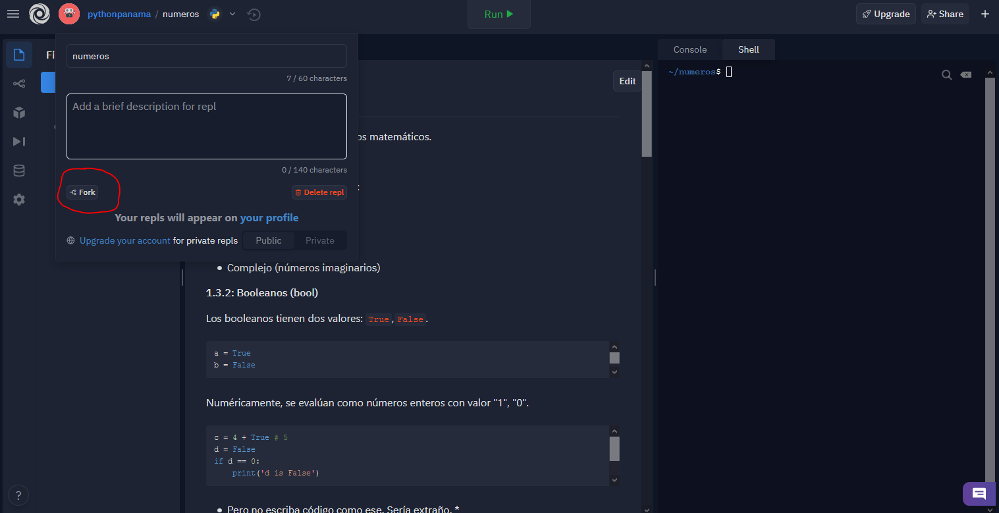
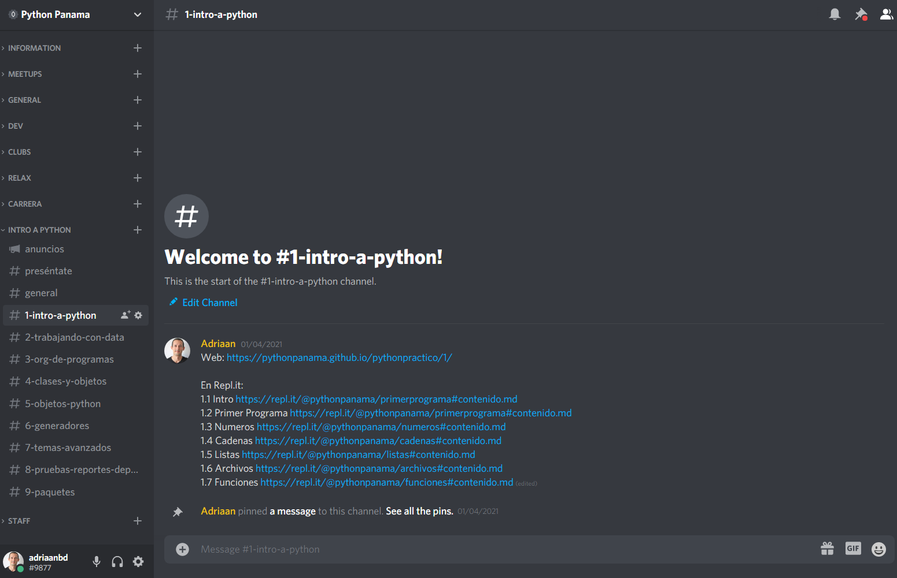

Empiece aquí
El curso fue originalmente diseñado para que todo lo haga desde su ordenador. Sin embargo, hemos puesto a su disposición en la plataforma Repl.it un editor, consola Python, terminal Linux y los archivos correspondiente a cada sección, a fin de que pueda escribir y ejecutar código en su navegador. Por tanto, sugerimos crear una cuenta en esta plataforma, a fin de que pueda guardar su trabajo y compartir el enlace cuando necesite ayuda.
Contenido
El enlace a esta plataforma interactiva con los archivos de la sección correspondiente siempre se encontrarán al inicio del contenido de la sección y al inicio de los ejercicios de cada sección. Usted lee el contenido primero e ingresa las instrucciones Python en la Consola mientras va leyendo.

Ejercicios
Cuando termine con el contenido.md, deberá continuar con el archivo ejercicios.md.

Shell
En muchas ocasiones, usted hará uso de la Consola Python; no obstante, cuando tenga que escribir en un archivo, primero busque el archivo y escriba su código ahí. Cuando tenga que ejecutarlo, tendrá que acceder al Shell, como puede ver a continuación. Por ejemplo, si tiene un archivo que se llama hipoteca.py tendrá que ejecutar $ python hipoteca.py y pulsar Enter.

Archivos nuevos
Usted también puede crear archivos nuevos.

Copiar el repositorio
Para que usted tenga una copia propia de su trabajo, tiene que hacer un Fork.

Compartir
En algunas ocasiones tendrá que compartirle el repositorio a alguien, especialmente cuando necesite ayuda. Por tanto, simplemente copie el enlace después de haberle hecho un Fork.
Comunidad
Es importante aprender en público e interactuar con otras personas. En ese sentido, Python Panamá ha puesto a disposición su servidor en Discord, donde el curso tiene su propia categoría organizado por canales, a fin de tener una conversación ordenada. Aquí podrá encontrar a otros Pythonistas que estan tomando este curso o que puedan ayudarles con alguna pregunta.
Puede acceder al servidor de Discord de Python Panama aqui.
